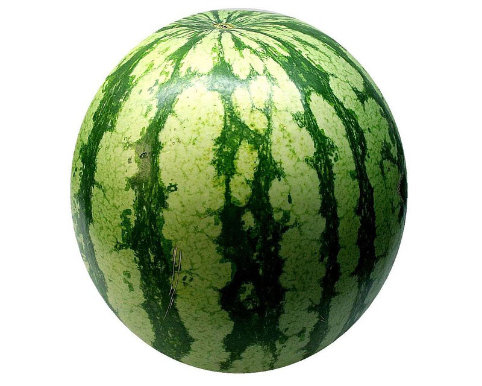
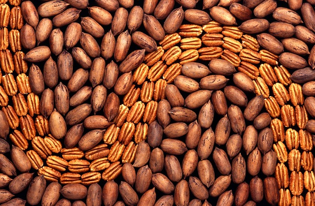

Documentación de las frutas
Las frutas son, quizás, los alimentos más llamativos por su diversidad de colores y formas. Pero además de lo que muestran a simple vista, forman parte de los alimentos con mayor cantidad de nutrientes y sustancias naturales altamente beneficiosas para la salud.
Si nos detenemos a pensar, veremos que las frutas y todos los vegetales, sobreviven a la intemperie, enfrentando todo tipo de condiciones y agresiones meteorológicas.
Todo ello es posible gracias a las sustancias protectoras y antioxidantes naturales que poseen. En definitiva esas mismas sustancias son las que nos protegen cuando consumimos el alimento.
Es decir que nos beneficiamos absolutamente con todas esas vitaminas y nutrientes que la fruta posee. Llenamos de vida todo nuestro organismo.
Marcos Saúl Teutle Espinoza
Cucurbitáceas
Pie de página
Fruta Dulce
Pie de página
Frutos Secos
Pie de página
Propiedades del Arandano
El arándano es un fruto que crece silvestre en zonas frescas del hemisferio norte. Es una baya globosa de color negro azulado que
mide unos 6mm de diámetro. Se consume sobre todo en mermeladas, tartas o como acompañamiento de diversos platos. Es un alimento rico en vitaminas que además aporta pocas calorías al organismo.
Alimentación y nutrición
Los arándanos frescos resultan beneficiosos frente a diversos problemas gastrointestinales. El extracto seco combate diversas afecciones cardiovasculares y unas cápsulas de arándano que se comercializan son beneficiosas para problemas de la vista.
Origen del Arandano: Sonora
Propiedades de la Frambruesa
La frambuesa es el fruto del frambueso o sangüeso. Esta planta crece silvestre en diversas regiones de Europa, aunque también se cultiva, siendo su cultivo bastante importante. Es una fruta pequeña, cónica o redondeada con una piel aterciopelada de color rojo o amarillento. La pulpa es muy aromática y su sabor es agridulce. Se puede consumir cruda o emplearse para elaborar mermeladas, jaleas y bebidas. También se puede encontrar congelada.
Alimentación y nutrición
Las frambuesas aportan potasio, hierro y calcio. Tienen un bajo contenido en sodio. Destaca su contenido en vitaminas B3, C y ácido fólico, aunque también aporta vitaminas A, B1, B2 y B6.
Origen de la Frambruesa:Europa
Propiedades de la Fresa
La fresa es un fruto de color rojo brillante, suculento y fragante que se obtiene de la planta que recibe su mismo nombre. En Occidente es considerada la "reina de las frutas". Además de poderse comer cruda se puede consumir como compota, mermelada,... Es empleada con fines medicinales ya que posee excelentes propiedades que ayudan a preservar la salud.
Alimentación y nutrición
Las fresas son muy apreciadas por su agradable aroma y efecto estimulante del apetito. Son fácilmente digestibles y tienen un gran efecto laxante debido a su fibra, pigmentos, ácidos y enzimas. Su riqueza en minerales básicos le confiere la propiedad de estimular el metabolismo.

Origen de la Fresa:El Occidente
Propiedades de la Grosella espinosa
Alimentación y nutrición
Las grosellas ofrecen muchos efectos positivos para nuestro organismo, pero se pueden apreciar diferencias en las propiedades de cada tipo de baya. Se pueden incluir en dietas de adelgazamiento por su escaso aporte calórico. (37-40 kcal).
La grosella espinosa es un laxante ligero y posee también efecto diurético. Su consumo se recomienda en casos de estreñimiento y trastornos de motilidad intestinal. Conviene consumir productos bien maduros o hechos puré. Posee un alto contenido en ácido cítrico y pectina.
Origen de la Grosella espinosa:
Propiedades de la Grosella negra
La grosella negra es una baya de pulpa translúcida con tonos rojos o verdes y de sabor agridulce. El fruto es pequeño, de color azul negro y esférico con un sabor intenso cuando está completamente maduro. Esta baya está recubierta de vello y su pulpa contiene muchas semillas pequeñas. Estos frutos no son sueltos sino que crecen en racimos.
Alimentación y nutrición
Las grosellas ofrecen muchos efectos positivos para nuestro organismo, pero se pueden apreciar diferencias en las propiedades de cada tipo de baya. Se pueden incluir en dietas de adelgazamiento por su escaso aporte calórico; 29,25 kcal por cada 100 gramos de grosellas.

Origen de la Grosella negra:
Propiedades de la Grosella roja
Las grosellas rojas son unas pequeñas frutas redondas de color rojo. Aunque se pueden consumir crudas, su sabor agridulce las hace indicadas para la elaboración de mermeladas, batidos, helados, etc. Son ricas en vitaminas y minerales.
Alimentación y nutrición
Las grosellas son frutas diuréticas indicadas en caso de hipertensión. Además previenen catarros y enfermedades gastrointestinales.
Origen de la Grosella roja: Crecen en racimos
Propiedades de la Zarzamora
La zarzamora es una planta generalmente silvestre de la que se aprovechan sus frutos, unas bayas pequeñas de color negro muy aromáticas y algo ácidas. Se consumen crudas, aunque también se emplean en la elaboración de compotas, macedonias, tartas, etc. Son ricas en vitaminas y minerales. Además aportan fibra y contienen pocas calorías.
Alimentación y nutrición
A la zarzamora se le atribuyen muchas propiedades curativas. Se pueden usar sus frutos, sus hojas y los brotes tiernos. Combate diversas afecciones como la diabetes, las anginas o las úlceras.
Origen de la Zarzamora: Silvestre
Propiedades del limon
El limón es redondo y ligeramente alargado, pertenece a la familia de los agrios y por tanto comparte muchas de las características de otras especies de cítricos, como es tener una piel gruesa. La pulpa es color amarillo pálido, jugosa y de sabor ácido dividida en gajos. El color de la corteza es amarillo y especialmente brillante cuando está maduro.
Se utiliza en fresco para usos culinarios, y su zumo en la industria de preparados alimenticios. Para la industria farmacéutica es materia prima para la fabricación de numerosos medicamentos, y en casa se puede utilizar para numerosos remedios caseros.
Alimentación y nutrición
El limón posee numerosas propiedades: refuerza el sistema inmunológico, es revitalizante, activa el metabolismo del calcio para los huesos y dientes, curan las hemorragias, tiene acción rejuvenecedora y ayuda en las dietas de adelgazamiento. Sin embargo por ser un fruto muy enérgico debe evitarse darlo a ancianos y a personas en estado de fuerte nerviosismo.

Origen del Limón:México
Propiedades de la Mandarina
La mandarina es un fruto similar a la naranja pero más pequeña y achatada por su base. Su corteza es lisa, brillante color rojo anaranjado y es muy fácil de pelar, incluso con las manos. La mandarina se consume principalmente como fruta en fresco, aunque también son conocidos las conservas de gajos de mandarinas.
Alimentación y nutrición
La mandarina es adecuada para tratar las úlceras, la vesícula, es buena para la fiebre, la anorexia, la tos y la intoxicación etílica.Las personas con llagas bucales o cuyas defecaciones sean secas deben abstenerse de consumir mandarina.
Origen de la Mandarina:México
Propiedades de la Naranja
La naranja es un fruto redondo, color naranja, consumido mayoritariamente en invierno. La pulpa del interior es también anaranjada y está formada por pequeñas bolsitas llenas de zumo.
La naranja se usa para consumo en fresco y, para la industria, principalmente en zumo.
Alimentación y nutrición
Las naranjas frescas son bajas en calorías y fuente de fibra, potasio, vitamina C y folato. Ayudan a prevenir el cáncer y las enfermedades cardiovasculares.
Origen de la Naranja:México
Propiedades del Pomelo
El pomelo es un fruto en forma de globo ligeramente achatado, de corteza lisa o rugosa, de color amarillo pálido o rojizo. Se consume principalmente como fruta fresca, y posee numerosas cualidades digestivas, estomacales y antisépticas.
Alimentación y nutrición
El pomelo previene las enfermedades cardiovasculares, fortalece el sistema inmunológico, previene los resfriados, estabiliza la flora intestinal, activa el metabolismo y el crecimiento celular y contribuye a la pérdida de peso.
Origen del Pomelo:Diferente
Propiedades del Melon
El melón puede ser redondo o alargado, de corteza amarilla, verde o combinada según la variedad. La pulpa es aromática, jugosa y dulce, resultando una fruta ideal para calmar la sed.
Alimentación y nutrición
El melón es diurético, depurativo y ligeramente laxante, por eso lo recomiendan en caso de estreñimiento. Resulta conveniente en la dieta de aquellas personas que padecen gota, reuma y patologías renales. Por su aporte de minerales, se recomienda consumirlo en períodos de convalecencia, anemias y en estado de debilidad.
Origen del Melon:México
Propiedades de la Zandia
La sandía es un fruto grande y de forma más o menos esférica que suele consumirse cruda como postre. Su pulpa es de color rojizo o amarillento y de sabor dulce. Resulta un alimento muy refrescante que aporta muy pocas calorías al organismo, también aporta algunas vitaminas y minerales.
Alimentación y nutrición
La sandía tiene diversas aplicaciones curativas, en las que intervienen la pulpa, la corteza o las semillas. Resulta beneficiosa contra las insolaciones, la hipertensión o la faringitis entre otras enfermedades. Es muy utilizada en diversos países americanos por sus propiedades curativas.

Origen de la Zandia: Americano
Propiedades del Aguacate
El aguacate es un fruto exótico carnoso que se obtiene del árbol tropical del mismo nombre. En algunas partes de América del Sur se conoce como Palta. Presenta unas dimensiones de 5-6 cm de longitud. El peso normal oscila entre 200-400 g, aunque pueden encontrarse piezas de hasta 2 kg de peso. La corteza es gruesa y dura de color verde cuyo tono depende de la variedad. La pulpa es aceitosa de color crema a verde amarillento, con un sabor similar a la nuez. Posee una única semilla redondeada de color pardo claro y 2-4 cm.
Alimentación y nutrición
Su aporte en ácido oleico ejerce efectos cardiovasculares beneficiosos, disminuyendo los niveles de colesterol plasmático. Contiene una cantidad importante de minerales y vitaminas, necesarios para el correcto funcionamiento del organismo.
Origen del Aguacate:America del sur
Propiedades de la Carambola
La carambola es una fruta tropical que se comercializa en Europa desde hace poco tiempo. Es también llamada la fruta estrella, debido a su forma estrellada al cortarla de forma transversal.
Su piel es fina, comestible, de un amarillo claro que se transforma en amarillo dorado cuando la fruta está madura. Posee una pulpa translúcida, crujiente, jugosa y ácida.
Alimentación y nutrición
La carambola en fresco constituye un gran aporte en vitamina A y C, y en minerales como el calcio, magnesio y fósforo.
Origen de la Carambola:Diferentes zonas
Propiedades del Coco
El coco es un fruto redondo y alargado de carne blanca, fibrosa y aceitosa cubierta por una cáscara dura, de color marrón y peluda. El coco tiene una envuelta fibrosa, una carne blanca dentro que recibe el nombre de copra y, cuando el fruto está aún tierno, un líquido lechoso que se suele usar como alimento básico de algunas zonas.
Alimentación y nutrición
El coco supone un aporte alimenticio importante en la dieta de los árabes del desierto. Cien gramos de este producto nos aportan entre 363 y 669 kcal. Así mismo, el consumo de esta misma cantidad aporta entre un 4,8 y 10,8 g de glúcidos así como unos 9 g de fibra.
Origen del Coco:Diferentes Zonas
Propiedades de la Chirimoya
Alimentación y nutrición
La chirimoya resulta útil para personas con problemas cardíacos, hepáticos o renales, debido a su alto contenido en agua y su bajo nivel de grasas.
También puede intervenir en dietas de adelgazamiento, ya que contiene pocas calorías, aunque sin olvidar que más que otras frutas carnosas. Además resulta de fácil digestión.
La chirimoya es una fruta tropical de forma oval, cónica, esférica o en forma de corazón, de 7,5-12,5cm de longitud y con un peso entre 150g y 1kg. La piel es reticulada y de color verde. La pulpa blanca es jugosa, dulce, muy aromática y de sabor dulce algo ácido. Contiene numerosas semillas aplastadas de color negro de 1cm de longitud.
Es un fruto originario de los Andes, desde donde se extendió por América Central y algunos países Mediterráneos.
Se consume sobre todo como fruta fresca. También se añade a macedonias y sorbetes y se puede usar para elaborar mermeladas, batidos o helados.
La chirimoya es un alimento rico en vitaminas y minerales. Destaca por su contenido en vitaminas A y C y en fósforo y calcio. Es adecuada para personas con problemas cardíacos, hepáticos o renales.

Origen de la Chirimoya:Tropical
Propiedades del Dátil
El dátil es le fruto de la palmera datilera. Es una baya de color amarillo dorado o rojo parduzco en la madurez. Su carne es blanda, aromática y de sabor dulce. En su interior posee un hueso alargado con un surco longitudinal.
Los dátiles pueden consumirse frescos o secos y constituyen un alimento básico para los habitantes del norte de África y el Cercano Oriente, quienes son los principales productores.
Alimentación y nutrición
Los dátiles suponen un aporte alimenticio importante en la dieta de los árabes del desierto. Su principal aporte alimenticio son los glúcidos. También ocupa un lugar importante la celulosa (fibra), pero es escaso el porcentaje de proteínas y lípidos.
Origen del Dátil:Norte de África
Propiedades del Fruta de la Pasion
Alimentación y nutrición
Las frutas de la pasión tienen efectos sedantes y relajantes, por lo que están indicadas en casos de ansiedad o insomnio.
La fruta de la pasión es una fruta tropical que proviene de diversas especies de plantas del género Passiflora. Se consume por su pulpa, que es jugosa, dulce y algo ácida, con la que además se pueden preparar helados, sorbetes, zumos, etc. Es un alimento rico en vitaminas y minerales. También aporta fibra y es bajo en calorías.
La fruta de la pasión o granadilla es una fruta carnosa tropical obtenida de diversas especies del género Passiflora, como la fruta de la pasión púrpura, la fruta de la pasión amarilla, la granadilla dulce, la badea, la cholupa y la curuba. El tamaño del fruto varía entre 4cm de la fruta púrpura y los 26cm de la badea, y el color puede ser amarillo, naranja, verde, marrón o rojo según la especie y la variedad.
El nombre de fruta de la pasión se debe a que los misioneros jesuitas en el siglo XVI vieron en su flor las marcas de la pasión de Cristo.

Origen de la Fruta de la Pasión:Tropical
Propiedades del Kiwi
El kiwi es un fruto de forma ovoide, de tamaño variable y recubierto de una piel fina de color marrón, ligeramente vellosa. Puede tener de 4 a 7,5cm de longitud por 3,5 a 5cm de anchura y el peso varía de 30-150g en función de la variedad, las condiciones climáticas y del sistema de cultivo. La pulpa puede ser de color verde de distinta tonalidad según la variedad, tierna, jugosa y de sabor agridulce. Presenta numerosas y pequeñas semillas negras comestibles. El color de la pulpa y el sabor delicado de la misma que recuerda en parte a la uva, a la fresa y a la piña, lo hacen muy agradable.
Alimentación y nutrición
Diversas investigaciones científicas indican que el kiwi es una destacada fuente de vitaminas, minerales, fibra y fitoquímicos. El kiwi posee una concentración excepcionalmente alta de vitamina C. Un fruto de tamaño medio puede aportar aproximadamente 90 mg de vitamina C, la cual cosa supera con creces la ingesta diaria recomendada de alrededor de 60 mg.
Origen del Kiwi:diferente zona
Propiedades del Litchi
El litchi es un fruto oriental redondeado, de unos 2,5-4cm de diámetro. Es de color rojo con la piel rugosa. La pulpa es blanca, dulce y jugosa. Se suele consumir crudo, aunque en China se combina con la carne y el pescado. También se usa en helados o batidos. Es un alimento que aporta vitaminas y minerales al organismo.
Alimentación y nutrición
Al litchi se le atribuyen múltiples propiedades curativas. Se usa tanto el fruto como el hueso, cáscara y raíces, y se aplica externa o internamente. Combate entre otras cosas los dolores de estómago, hernias y el dolor de garganta.
Origen del Litchi:China
Propiedades del Mango
El mango está reconocido como uno de los 3 ó 4 frutos tropicales más finos. Es una fruta que se obtiene del árbol del mismo nombre.
Tiene forma ovalada, con la piel no comestible y color variable de amarillo pálido a rojo intenso. La pulpa es pegajosa y su coloración también varía, desde amarillo a anaranjado. El sabor del mango maduro es dulce, y bastante ácido cuando aún está verde. Es una fruta jugosa y fibrosa, y poseen un hueso interior. Su tamaño varía entre 5-20 cm de longitud, con un peso de 300-400 g, llegando algunas piezas a alcanzar más de un kilo.
Alimentación y nutrición
El mango es una fruta con un elevado contenido en glúcidos. Su contenido en fibra no soluble es bajo, al igual que su valor calórico. El mango puede reducir el riesgo de contraer enfermedades en general por intensificar las funciones inmunológicas.

Origen del Mango:diferente zona
Propiedades de la Papaya
La papaya es una fruta tropical que se consume por su pulpa principalmente, que suele ser de color anaranjado y de sabor dulce y jugoso. También se aprovechan sus semillas secas. Se puede tomar como fruta fresca, cocida o en diversos preparados como helados, refrescos y jaleas. Es un alimento bajo en calorías y altamente digestivo.
Alimentación y nutrición
La papaya es un alimento rico en agua y bajo en calorías, que aporta minerales como calcio, fósforo y hierro y vitaminas A y C. Contiene papaína, un enzima que favorece la digestión.
Origen de la Papaya:diferente zona
Propiedades de la Pina
La piña madura tiene una fragancia muy singular. Es de hermoso color y agradable sabor agridulce. Se puede comer cruda o como ingrediente en zumos, conservas, licores, etc. Tanto el fruto como las hojas se usan en la preparación de compuestos medicinales.
Alimentación y nutrición
El contenido calórico de la piña es bajo, por lo que es adecuada en dietas de adelgazamiento. Es beneficiosa para facilitar la digestión y útil para personas con gastritis o dispepsia. Es ligeramente laxante y normaliza las funciones intestinales. Se trata de una fruta que activa la función pancreática. Es rica en manganeso, el cual apenas está presente en el resto de frutas.

Origen de la Pina:
Propiedades del Platano
El plátano o banano es una fruta amarilla, de forma alargada, que encontramos en el mercado en grupos de tres a veinte, de forma similar a un pepino triangular, oblongo y normalmente de color amarillo. Su sabor es más o menos dulce según la variedad.
Alimentación y nutrición
El plátano es rico en fibra, potasio y algunas vitaminas beneficiosas para la salud. Es una fruta buena para todos excepto diabéticos y obesos debido a su alto contenido en almidón y azúcares.

Origen del Platano:diferente zona
Propiedades del Albaricoque
El albaricoque es un fruto similar al melocotón pero mucho más pequeño, de color amarillo pálido o anaranjado con alguna sombra roja. La pulpa no es muy jugosa, tiene cierta textura fibrosa y consistencia harinosa cuando el albaricoque está maduro. Se consume principalmente como fruta fresca, aunque también se utiliza para fabricar algunos derivados como compotas, mermeladas, zumos y los famosos ‘orejones’ que no son más que albaricoques secos.
Alimentación y nutrición
El albaricoque seco (orejones) posee un efecto laxante, mientras que el fresco es un buen remedio para las diarreas. El albaricoque aumenta las defensas de nuestro organismo, es recomendable en situaciones de depresión, inapetencia y retraso en el crecimiento. No deben ser consumidos por enfermos de hígado o personas delicadas del estómago.
Origen del Albaricoque:
Propiedades de la Cereza
La cereza es un fruto que puede consumirse fresco o utilizarse en la elaboración de tartas, mousses, mermeladas y compotas. Generalmente las cerezas de mayor tamaño son las que tienen mejor textura y sabor.
Alimentación y nutrición
La cereza es un fruto con unas cualidades medicinales y alimenticias interesantes. Rica en vitaminas K, A y C, también nos aporta hierro, calcio y fósforo. Tiene un bajo contenido en grasas y nada de colesterol, su valor energético lo aportan en su mayoría, los hidratos de carbono.

Origen de la Cereza:
Propiedades de la Ciruela
La ciruela es una fruta de hueso, redonda o alargada que puede ser de color amarillo, verde, rojo o lila. En general es muy nutritiva y rica en vitaminas, destacando la vitamina C. Según su contenido en agua es más o menos jugosa. Las ciruelas pasas o deshidratadas se conservan más tiempo y son muy dulces.
En el mercado hay otros productos elaborados con ciruela como son mermeladas, zumos y licores.
Alimentación y nutrición
La ciruela es una fuente importante de vitaminas y otros nutrientes con efectos saludables. Gracias a su contenido en vitamina C previene varios tipos de cáncer.
Origen de la Ciriuela:
Propiedades del Higo
El higo se considera un falso fruto, es un receptáculo que contiene cientos de pequeños frutos que vulgarmente llamamos pepitas. Se utiliza como fruta para consumo en fresco, desecado, como puré para confiterías, en conserva o confitados.
Alimentación y nutrición
El higo crudo y seco es altamente nutritivo y una rica fuente de fibra dietética, potasio, proteínas, minerales (hierro, fósforo, magnesio, cobre y zinc) y vitaminas (riboflavina y vitamina B6).

Origen del Higo:Diferente zona
Propiedades del Kaki
El kaki es una fruta tropical de color más o menos anaranjado, con la piel lisa y un sabor muy dulce. Se consume como fruta fresca, aunque se puede emplear en pasteles o mermeladas. Es una fuente importante de vitaminas A y C.
Alimentación y nutrición
Del kaki se pueden usar diversas partes con fines medicinales. Se puede aprovechar el fruto, las hojas, la corteza del árbol o incluso las flores. Reduce la tensión, calma la tos y previene la arteriosclerosis, entre otras muchas propiedades.
Origen del Kaki:Diferente zona
Propiedades de la Manzana
La manzana es el fruto ideal para tomar a cualquier hora y participa positivamente en la consecución del equilibrio alimentario. La piel puede ser de color verde, amarilla o rojiza, y la carne va desde un sabor agrio hasta el dulce.
Es uno de los frutos más consumidos en el mundo. La gran cantidad de variedades existentes hacen que se encuentren al alcance del consumidor durante todo el año.
Alimentación y nutrición
La manzana provee al ser humano de gran cantidad de vitaminas y otros nutrientes con efectos beneficiosos para la salud.
Por su contenido en fibra actúa como regulador de numerosas molestias intestinales. Su consumo en crudo resulta un excelente dentífrico natural, limpia y blanquea la dentadura y favorece a las encías.
Origen de la Manzana:Mexico
Propiedades del Melocotón
El melocotón es un fruto redondo, coloreado, jugoso y típicamente veraniego.
Su producción se extiende a lo largo de los países por lo que podemos disponer de este fruto a lo largo de todo el año.
Usado para consumo en fresco y, para la industria, especialmente enlatado.
Alimentación y nutrición
El melocotón aporta cantidades modestas de vitamina C y provitamina A. Sin embargo hace una buena aportación de potasio, fósforo y vitamina B.
Origen del Melocotón:Diferentes pais
Propiedades de la Nectarina
La nectarina es un fruto redondo, con carne jugosa, con hueso, parecido al melocotón. Su piel no es vellosa sino lisa como la de la ciruela y se puede consumir sin pelar o pelado. La época de recolección de la nectarina es durante el mes de mayo en el Hemisferio Norte, aunque se puede encontrar en los mercados durante todo al año ya que se cultiva en muchos países del mundo.
Alimentación y nutrición
La nectarina es una de las frutas carnosas que mayor contenido en vitamina B3 posee. Esta vitamina participa en el metabolismo de los nutrientes, potenciando la degradación del colesterol y por tanto, ayuda a reducir el nivel en la sangre.

Origen de la Nectarina:Hemisferio norte
Propiedades del Nispero
El níspero es un fruto redondeado de color anaranjado que es apreciado por su carne aromática, dulce y algo ácida. Se suele consumir encrudo, aunque se elaboran diversos preparados como mermeladas, pasteles o zumos. Apenas aporta nutrientes al organismo, aunque contiene potasio en cantidades apreciables y algunas vitaminas.
Alimentación y nutrición
El níspero es un alimento digestivo, diurético y depurativo. Además reduce el colesterol y está indicado para las personas que padecen hipertensión. Las hojas se usan en algunos países contra diversas enfermedades como la diabetes o la tos.
Origen del Nispero:Diferente zona
Propiedades de la Pera
La pera es un fruto muy extendido hoy en día por todo el mundo, que se consume tanto en fresco como cocinada, y que está disponible durante todo el año.
Existen numerosas variedades cultivadas, que varían tanto en forma como en tamaño y colores.
Alimentación y nutrición
La pera tiene diversas propiedades medicinales gracias a su contenido en agua y fibra, y a su riqueza en vitaminas y minerales. Es adecuada para depurar el organismo y limpiar el intestino. Además es diurética y aporta minerales al organismo.
Origen de la Pera:Diferente zona
Propiedades de la Uva
La uva es un fruta que crece en racimos apretados. Su pulpa es blanca o púrpura y de sabor dulce. Se consume como fruta fresca o zumo, aunque su utilidad principal es la obtención de vinos. También se realizan conservas con ella. Contiene diversos minerales y vitaminas, y se piensa que tiene poderes antioxidantes y anticancerígenos.
Alimentación y nutrición
La uva se ha usado desde hace mucho tiempo por sus propiedades curativas. Es laxante y diurética, y resulta indicada en casos de debilidad o defensas bajas. También es un buen depurativo de la sangre y previene la osteoporosis.
Origen de la Uva:Diferente zona
Propiedades de la Almendra
La almendra es la semilla comestible del fruto del almendro dulce, de color blanco brillante envuelta con una cubierta marrón rojiza.
Se consume como fruto seco, frito y/o salado y también se elaboran productos tan conocidos como el turrón y el mazapán.
Alimentación y nutrición
Las almendras proporcionan mucha energía, proteínas, minerales, vitaminas y fibra. Además, la mayoría de las grasas que contienen son insaturadas y reducen el colesterol en la sangre.
Origen de la Almendra:Diferente zona
Propiedades de la Avellana
La avellana es el fruto del avellano, pequeño, redondeado, cáscara de color canela y carne blanco-amarillenta, de sabor dulce y rica en aceite. Se consume el fruto como tal, en crudo, tostado o como ingrediente en elaboración de diversos productos, siendo los más frecuentes los turrones y chocolates.
Alimentación y nutrición
Las avellanas son una rica fuente de grasa no saturada, proteínas, carbohidratos, vitamina E, folato y las vitaminas B ácido pantoténico y biotina. La vitamina E es un antioxidante y limpiador de radicales libres en el cuerpo, ayudando de este modo a proteger contra algunos tipos de cáncer.

Origen de la Avellana:Diferente zona
Propiedades del Cacahuate
El cacahuete o maní es un fruto seco muy apreciado y popular. Los venden con cáscara o pelados, salados o no y muchas veces tostados.
Es ingrediente de algunos productos de bollería y con él se elabora la manteca de cacahuete.
El cacahuete se conoce familiarmente por otros nombres como el de maní, cacahué, alfóncigo de tierra y cacao de tierra. Es un fruto seco muy apreciado y popular.
Alimentación y nutrición
Los cacahuetes son muy saludables. Contienen ácido oleico que es beneficioso para prevenir el cáncer y las enfermedades cardiovasculares.
Son una fuente importante de minerales como el potasio y el fósforo, necesarios para la actividad muscular y nerviosa
Origen del Cacahuate:Diferente zona
Propiedades de la Castana
La castaña es el fruto del castaño, de forma redondeada y plana por un lado, normalmente de color marrón brillante por fuera y la pulpa blanco-amarillenta y de sabor dulce. Suelen comerse asadas aunque hay muchos más usos y formas de presentación en el mercado.
Alimentación y nutrición
La gran cantidad de minerales que contiene la castaña la hace muy indicada para fortalecer el cerebro y mejorar todas las funciones intelectuales del ser humano, aunque, si se comen muchas pueden resultar indigestas, por lo que se recomienda no tomar más de quince castañas al día. Además, dice el refrán, Las castaña en decocción, en otoño y en invierno alejan de la depresión.

Origen de la Castana:Diferente zona
Propiedades de la Nuez
La nuez es el fruto del nogal, de forma redondeada u ovoide, con una cáscara dura y rugosa de color pardo rojiza. La parte comestible de su interior tiene un sabor dulce particular.
En el mercado hay nueces descascarilladas, troceadas o molidas y productos elaborados con ellas.
Alimentación y nutrición
La parte comestible de la nuez recuerda por su forma al cerebro y gracias a su contenido en vitaminas del grupo B, son buenas para la memoria.
Además, reducen el riesgo de infarto, los niveles de colesterol en la sangre y pueden comerlas los hipertensos y los diabéticos.
Origen de la Nuez:
Propiedades de la Pacana
Es un fruto seco muy similar a la nuez por lo que se conoce como ‘nuez americana’ o ‘Nuez Pecan’. Se consume al natural y se utiliza para elaborar muchos postres.
Es una fuente importante de proteínas.
Alimentación y nutrición
La pacana es un fruto seco muy saludable y tiene un alto valor energético ya que aporta unas 700kcal/100g. Es un complemento excelente para la dieta de los vegetarianos debido a la calidad de sus proteínas.

Origen de la Pacana:Diferente zona
Propiedades del Pistacho
El pistacho es un fruto seco de pequeño tamaño, alargado con una cáscara dura, delgada y de color marrón claro. La parte comestible es verde-amarillenta y tierna.
Se usan en productos comestibles y hasta en cosméticos, por lo que hay mucha demanda.
El pistacho es un fruto de gran categoría y es muy apreciado tanto para su consumo en fresco como para la industria.
Alimentación y nutrición
El pistacho es un fruto seco muy nutritivo y energético. Es el más rico en potasio y tiene un alto contenido en fibra.
Se recomienda a personas que realicen grandes esfuerzos físico e intelectuales.

Origen del Pistacho:Diferente zona